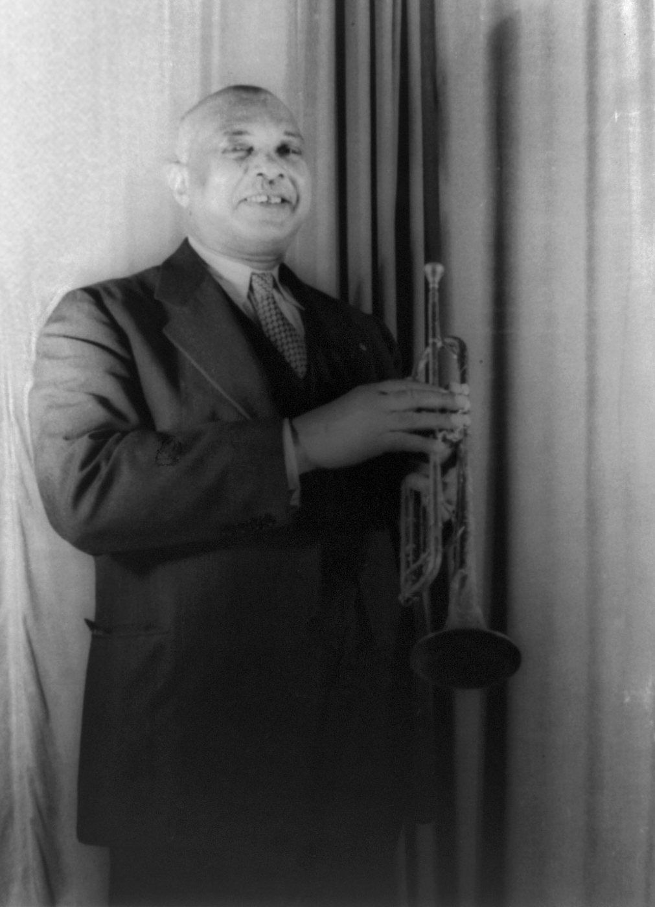
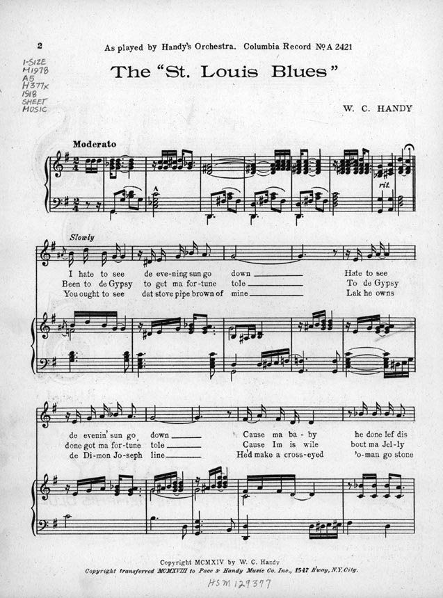
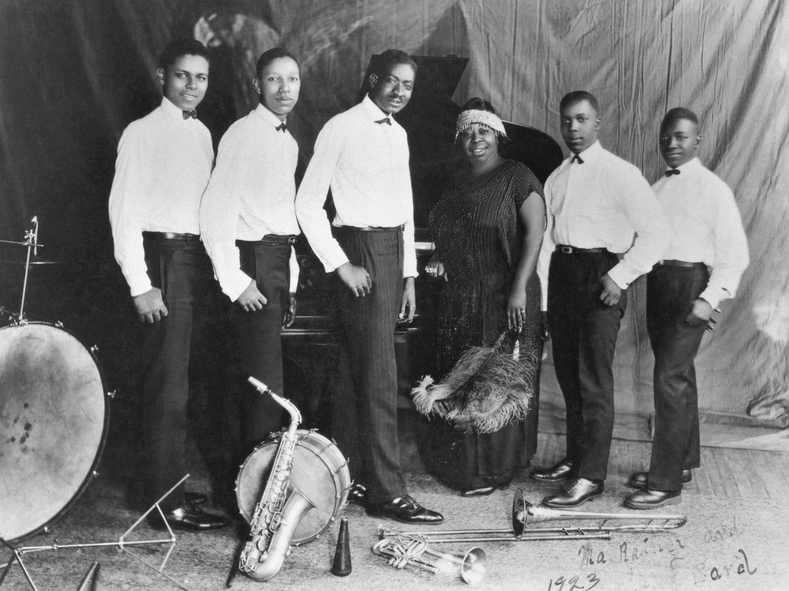
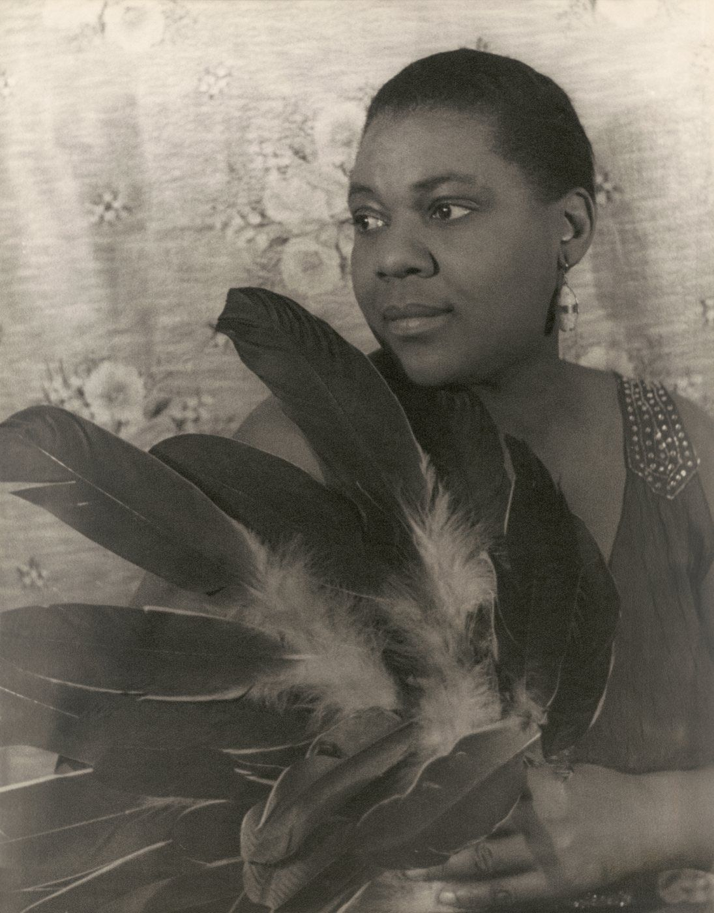
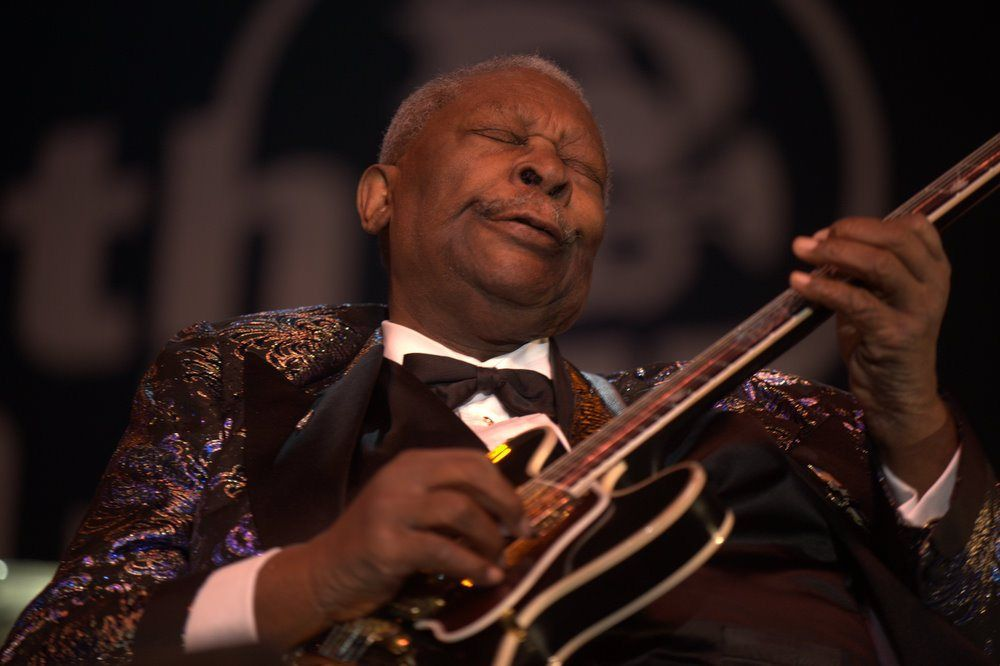
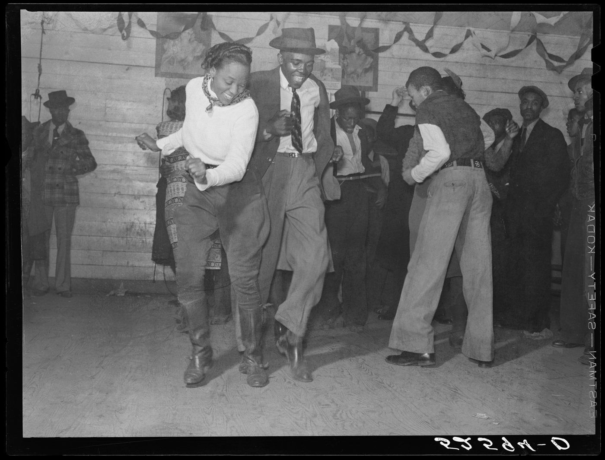

1936 年 11 月，得克萨斯州圣安东尼奥的一家旅馆。
一个二十五岁的黑人青年抱着一把木吉他，据说面朝墙角坐着录音。有人说他太害羞，不愿意让在场的白人制作人看见自己的手；也有人说，墙角能把吉他的声音拢起来，听着更响。
他叫 Robert Johnson。他这一生只录下了二十九首歌，两年后在密西西比去世，年仅二十七岁，死因至今说不清楚。关于他，流传最广的是一个传说：他曾在午夜的十字路口，把灵魂卖给魔鬼，换来了一手无人能及的吉他。
二十多年后，他的录音被重新发行成唱片，漂洋过海到了英国。一群十几岁的英国少年反复听着这些沙沙作响的老录音，后来他们组成了乐队，叫滚石，叫 Cream，叫 Led Zeppelin。
详细讲讲布鲁斯，它为什么是现代流行音乐的根？
这一章想回答的就是这个问题。我会先讲布鲁斯是在什么样的土地上长出来的，再把它拆开，看看它由哪些零件组成：十二小节、三个和弦、蓝调音、呼应、shuffle 律动、木吉他和电吉他。每个零件都配了可以直接点开听的声音示例，全部是浏览器现场合成的。最后，我们沿着时间线走一遍，看这些零件怎么一个个被摇滚、R&B 和流行音乐继承下去。
01 / 土地布鲁斯从哪里来
一个“最南方的地方”
在美国密西西比州西北部，密西西比河和亚祖河之间，有一片极其平坦、土壤肥沃的冲积平原，叫作密西西比三角洲（Mississippi Delta）。这里曾是美国最重要的棉花产区之一，也是黑人人口比例最高、种族压迫最严酷的地区之一，有人称它是“地球上最南方的地方”。布鲁斯最核心的发源地就在这里。
自由之后，并没有真正自由
1865 年美国废除奴隶制，但对南方黑人来说，生活并没有变好多少。大部分人成了“分成佃农”：租种白人地主的土地，收成后按比例交租，年年欠债，几乎不可能翻身。19 世纪末开始，南方各州又陆续通过了一系列种族隔离法律，也就是“吉姆·克劳法”，学校、车厢、饮水处都分黑白，黑人的投票权被各种手段剥夺。
布鲁斯就诞生在这个时期（大约 1890 年代到 1900 年代）。它唱的是这片土地上最具体的东西：干不完的活、还不清的债、离开的爱人、发大水、坐火车去北方的梦想。英语里 blue 有“忧郁”的意思，“have the blues”就是“心情低落”，这个词后来成了这种音乐的名字。
它的五个前身
- 劳动号子（work songs）：一群人干活时一人领唱、众人应和，用歌声统一节奏。这是“呼应”结构的来源之一
- 田野呼喊（field hollers）：一个人在田里干活时拖长了嗓子随口喊唱，音高忽上忽下、自由滑动，没有固定节拍。布鲁斯那种“滑来滑去”的唱法，很大程度上来自这里。下面的“音色画廊”里可以听到模拟的呼喊
- 黑人灵歌（spirituals）：奴隶时代在教会里唱的宗教歌曲，后来发展出福音音乐。布鲁斯常被叫作“魔鬼的音乐”，和灵歌正好是一体两面：一个唱给上帝，一个唱给世俗生活
- 非洲的音乐传统：呼应、可以弯曲的音高、多层交错的节奏，这些特点通过一代代人的口耳相传保留了下来。三角洲还流行一种叫“diddley bow”的单弦琴，常常就是把一根铁丝钉在门板或墙上，用瓶子在弦上滑动来改变音高。很多人认为它的源头是非洲的单弦乐器，后来的滑棒吉他也和它一脉相承
- 欧洲的乐器与和声：吉他、钢琴、口琴这些便宜好学的乐器，以及以“三个和弦”为基础的和声体系
所以布鲁斯本身就是一个混血儿：非洲的嗓音和律动，加上欧洲的乐器和和弦。后来的整部美国流行音乐史，都在重复这种混合。
一个火车站的下午
关于布鲁斯最早的文字记录之一，来自一位叫 W.C. Handy 的黑人乐队指挥。据他自传里的回忆，1903 年前后，他在密西西比一个叫 Tutwiler 的小火车站等车，火车晚点了九个小时。他看到一个衣衫破旧的黑人坐在旁边，一边用小刀在吉他弦上滑动，一边反复唱着一句关于“去两条铁路交汇的地方”的歌词。Handy 后来说，那是他听过的最奇怪的音乐。
几年后，他开始把这种音乐写成乐谱发表，包括后来红遍全国的《St. Louis Blues》（1914）。他因此被称为“布鲁斯之父”。准确地说，他不是布鲁斯的发明者，而是第一批把它记录下来、推向大众的人。


唱片公司发现了新市场
1920 年，黑人女歌手 Mamie Smith 录制了《Crazy Blues》，销量好得惊人。唱片公司这才发现，原来有一个巨大的黑人听众市场。他们开始专门为黑人听众录制唱片，并把这类唱片叫作“种族唱片”（race records）。
1920 年代最早红起来的布鲁斯明星其实是女性：被称为“布鲁斯之母”的 Ma Rainey，以及被称为“布鲁斯女皇”的 Bessie Smith。她们在剧院和巡回演出团里演唱，身后是爵士乐手伴奏，这种风格叫“经典女声布鲁斯”。而三角洲那些背着木吉他四处流浪的男歌手，要到 1920 年代末才陆续被录音。


02 / 骨架十二小节与三个和弦
先认识几个词
- 拍和小节：跟着音乐拍手，每一下就是一拍。布鲁斯通常四拍一组，一组叫一个小节
- 和弦：几个音同时响起，构成一种“颜色”。吉他手扫一下弦，听到的就是一个和弦
- I、IV、V：用罗马数字给和弦编号。如果一首歌在 C 调，那么从 C 开始数，第一个音 C 上的和弦叫 I，第四个音 F 上的叫 IV，第五个音 G 上的叫 V。用数字而不用字母的好处是：换到任何调，关系都不变
这三个和弦的“性格”很不一样。I 是家，稳定、安心；IV 是离开家出门走走，有一点展开的感觉；V 是最紧张的位置，听着就“想回家”。几乎所有的布鲁斯，都是在这三个和弦之间按固定顺序走一圈。
标准的十二小节
把三个和弦按下面的顺序排成十二个小节，就是一轮标准的布鲁斯。点“播放”，跟着高亮的格子走一遍。伴奏是用合成木吉他弹的 shuffle 节奏，低音由拇指拨出来。
走到第 5 格，和声“离开了家”；第 9 格最紧张；然后一路回家。
为什么用的是“七和弦”
你可能注意到了，格子里写的是 C7、F7、G7，而不是 C、F、G。后面这个“7”表示在普通的三个音之上，再加一个比较“刺”的音（降七级音）。在传统和声里，这种和弦只该出现在 V 的位置，因为它听着不稳定，急着解决。布鲁斯却让三个和弦全都带上这个音，结果每个和弦都带着一点“不安分”的味道，这正是布鲁斯听着“又甜又涩”的原因之一。
歌词：AAB 结构
十二小节正好分成三行，每行四小节。歌词也跟着分成三句，最常见的形式叫 AAB：
A天没亮我就起了床，口袋里一个钱也没有
A天没亮我就起了床，口袋里一个钱也没有
B老板说今天没活干，明天你也不用再来了
为了说明结构，这几句是本书原创的仿写，不是真实歌词。第一句提出一个处境；第二句原样重复（或者稍微改几个字）；第三句给出转折、结论或一个苦涩的笑话。这样设计很实用：歌手唱第二遍的时候，可以一边唱一边想第三句怎么编；听众听到第二遍，也能跟上一起唱。而且每句歌词通常只占每行的前两小节，后两小节空出来，留给吉他或口琴“回答”，这就是第 04 节要讲的呼应。
三种常见的变体
- 快四（quick change）：第 2 小节就提前跳到 IV，然后再回到 I。让开头不那么单调，芝加哥布鲁斯里很常见
- 回转（turnaround）：最后一小节不停在 I，而是走到 V，制造“还没完”的紧张感，引出下一轮。很多布鲁斯的结尾，吉他手都会弹一段固定的下行小乐句作为回转
- 小调布鲁斯：把和弦换成小调，听起来更暗、更忧伤。B.B. King 的《The Thrill Is Gone》就是代表
回到上面的实验 01，切换“快四 + 回转”和“小调布鲁斯”，对比听一下。除了十二小节，也有八小节、十六小节的布鲁斯，还有像 John Lee Hooker 那样几乎整首歌只用一个和弦的。早期三角洲布鲁斯的小节数常常不规整，歌手唱到哪里就换到哪里，“标准十二小节”是后来才逐渐固定下来的。
03 / 灵魂蓝调音与布鲁斯音阶
如果说十二小节是布鲁斯的骨架，蓝调音就是它的灵魂。很多人说不清布鲁斯是什么，但一听到这种音，马上就知道“这是布鲁斯”。
大调和小调之间的那道缝
先做个对比。同样以 C 为根音，第三个音如果是 E，听起来明亮、开心，这叫大三度；如果降低半音变成 E♭，听起来暗淡、忧伤，这叫小三度。西方古典音乐里，一首曲子要么用大调、要么用小调，界线分明。
布鲁斯偏不选。伴奏的和弦是明亮的大调，歌手和吉他手却常常唱、弹那个降低的音，或者干脆停在两者之间，从下面慢慢“推”上去。这种落在缝隙里的音，就叫蓝调音（blue note）。明亮的和弦配上往下沉的旋律，就是“笑着哭”。
“推弦”是左手手指把琴弦往旁边推，琴弦绷紧、音高上升；“滑棒”是用一个玻璃瓶颈或金属管在弦上滑。两种方式都能停在两个音中间，钢琴就做不到，因为钢琴键之间没有“缝”。
不止一个蓝调音
布鲁斯里常被“降低”的音主要有三个：第三音、第五音和第七音。把它们和其他几个音放在一起，就得到了布鲁斯音阶。以 E 调为例，它只有六个音：
E G A B♭ B D （E）
和普通的大调音阶（E F♯ G♯ A B C♯ D♯）相比，它少了几个音，多了一个 B♭。这个 B♭ 就是降五级音，是布鲁斯音阶里最“刺耳”、也最有味道的那个音。在中世纪，和它同样距离的音程曾被称为“魔鬼音程”。
自己即兴一下
布鲁斯音阶有个神奇之处：只要伴奏是布鲁斯，你在这六个音里随便按，听起来都“对”。这也是为什么无数吉他手学的第一个音阶就是它。打开伴奏，点下面的音块（电脑上也可以按键盘 A S D F G H J），试着弹一句，停两拍，再弹一句。
红色的 B♭ 就是“魔鬼音”，试试让它在一句话的中间一闪而过，然后落到 B 或 E 上。勾选“推弦进入”，每个音都会从下面滑上来。
04 / 对话呼应
布鲁斯不是一个人在自言自语，而是一场对话。歌手唱一句，然后停下；吉他、口琴或者钢琴接过去“回答”一句。这种一来一回的结构叫呼应（call and response）。
它最早来自非洲的集体音乐和美国南方的劳动号子：领唱喊一句，众人回一句。到了布鲁斯里，回答的“众人”变成了乐器。前面说过，每行歌词只占前两小节，后两小节正好留给乐器：
- 第 1–2 小节：歌手唱 A
- 第 3–4 小节：吉他回答
- 第 5–6 小节：歌手唱第二遍 A
- 第 7–8 小节：吉他再回答
- 第 9–10 小节：歌手唱 B
- 第 11–12 小节：吉他收尾
这里的“人声”是用滤波器模拟的元音，没有歌词。注意听：人声停下来的地方，乐器马上接上，像在说“我懂”。
B.B. King 把这种对话发挥到了极致。他几乎从不一边唱一边弹：唱完一句，放下嗓子，拿起吉他回一句。他的吉他甚至有自己的名字，叫“Lucille”。据他回忆，1949 年他在阿肯色州一家舞厅演出时，两个男人为一个叫 Lucille 的女人打架，打翻了取暖的煤油桶，引发大火。他冲回火场抢出了吉他，后来就把所有的吉他都叫作 Lucille，提醒自己别再干这种傻事。

05 / 身体shuffle 律动
布鲁斯的节奏有一种特别的“摇晃感”，最好用身体去感受。把每一拍再分成两半，正常的分法是平均的“哒、哒、哒、哒”，叫直八分（straight）。布鲁斯通常把每一拍分成“长、短”，听起来像“哒——哒、哒——哒”，或者像马蹄声、像走路时一瘸一拐的步子，这叫 shuffle（拖步）。
更准确地说，shuffle 是把一拍分成三份，前两份连在一起当“长”，第三份当“短”。这种三连音的律动后来被爵士乐继承，叫 swing（摇摆）；而摇滚乐把它拉直成平均的八分音符，速度加快，就变成了摇滚的律动。
低音弹的是一段经典的 boogie 低音线：根音、三音、五音、六音、降七音、六音、五音、三音，一上一下，像在爬楼梯。这段走法后来几乎原封不动地进了早期摇滚乐。
06 / 音色从木吉他到电吉他
布鲁斯在半个世纪里，从密西西比的门廊走进了芝加哥的酒吧，声音也彻底变了样。先听听布鲁斯里最常见的几种声音。
所有音色都是用代码合成的近似效果。吉他用的是一种模拟琴弦振动的算法（Karplus-Strong），口琴和人声用的是振荡器加滤波器。和真实乐器比当然粗糙，但足够听出差别。
三角洲：一个人，一把木吉他
早期三角洲布鲁斯几乎都是独奏。歌手一个人坐在门廊、小酒馆（juke joint）或者街角，用一把便宜的木吉他给自己伴奏。为了一个人撑起整个乐队，他们发展出了一套技巧：拇指在低音弦上一直“咚、咚、咚”地弹出低音和节奏，其他手指在高音弦上弹旋律和回答，有时还用滑棒在弦上滑出哭腔一样的声音。很多人还会用脚踩地板打拍子。
这种音乐粗粝、私人、情绪浓烈，节奏和小节都很自由，像是在讲述一件自己身上发生的事。

芝加哥：插上电，组成乐队
1910 年代到 1970 年，大约六百万南方黑人陆续北上，去芝加哥、底特律、纽约这些工业城市找工作，这被称为“大迁徙”。布鲁斯也跟着他们进了城。城里的酒吧人声嘈杂，一把木吉他根本听不见，于是乐手们换上了电吉他，接上音箱。音箱开得太大，声音会失真、发毛，这种“脏”的声音后来反而成了芝加哥布鲁斯的标志。
乐队也壮大了：电吉他、贝斯、鼓、钢琴，还有接上麦克风的口琴。口琴手 Little Walter 把小小的口琴对着麦克风吹，再接进吉他音箱，声音变得像萨克斯一样粗壮。同样一段十二小节，下面分别用两种方式演奏：
一把木吉他：拇指弹低音，滑棒弹回答，配一段“人声”。速度慢、节奏松。
乐队：过载电吉他的 boogie 节奏型、贝斯、鼓、接麦克风的口琴回答。
停顿式 riff
芝加哥布鲁斯还有一个标志性的写法，叫“停顿式”（stop-time）：整个乐队在小节的第一拍一起重重打一下，然后突然全部安静，把空间留给歌手；几个小节之后，乐队才一起冲进来。Muddy Waters 的《Hoochie Coochie Man》就是最有名的例子。下面是用同样手法写的一段示例：
07 / 历史五个时期
- 1890s–1910s萌芽：口头传统
在三角洲和南方各地的种植园、小酒馆、街头流传，没有录音，也几乎没有乐谱。W.C. Handy 等人开始把它写成乐谱发表。
- 1920s唱片时代与经典女声布鲁斯
Mamie Smith 的《Crazy Blues》（1920）打开了“种族唱片”市场。Ma Rainey、Bessie Smith 成为第一代布鲁斯明星，由爵士乐手伴奏，在剧院演出。
- 1920s 末–1930s乡村布鲁斯：三角洲、德州与东海岸
唱片公司深入南方录音。三角洲有 Charley Patton、Son House、Robert Johnson；得州有 Blind Lemon Jefferson；东海岸的“皮埃蒙特布鲁斯”则以轻快精巧的指弹著称，代表人物有 Blind Willie McTell。
- 1940s–1950s城市布鲁斯：电气化与芝加哥
得州的 T-Bone Walker 是最早一批把电吉他用于布鲁斯的人。1941 年，民俗学家 Alan Lomax 在三角洲为美国国会图书馆录下了一个年轻的拖拉机手 Muddy Waters；两年后，Muddy Waters 搬到了芝加哥。1950 年定名的 Chess 唱片公司，签下了 Muddy Waters、Howlin' Wolf、Little Walter，贝斯手兼词曲作者 Willie Dixon 为他们写了大量名曲。孟菲斯的 B.B. King 则把布鲁斯吉他独奏推向了新的高度。
- 1960s 以后复兴、出口与布鲁斯摇滚
英国掀起“布鲁斯热潮”，滚石、The Yardbirds、Cream、Eric Clapton 疯狂模仿芝加哥布鲁斯。与此同时，美国的民谣复兴运动重新“找回”了一批被遗忘的老布鲁斯歌手：1963 年找到了 Mississippi John Hurt，1964 年找到了 Son House 和 Skip James，他们在晚年重新登台录音。之后，布鲁斯和摇滚融合成“布鲁斯摇滚”，从 Jimi Hendrix 到 1980 年代的 Stevie Ray Vaughan，一直延续到今天。
08 / 遗产为什么说它是根
现在可以回答开头的问题了。布鲁斯的遗产可以拆成五条“遗传路径”，每一条都能在后来的音乐里清楚地听到。先看一张家谱：
1. 和声骨架 → 摇滚乐
早期摇滚乐很多就是提速、加重的十二小节布鲁斯。把 shuffle 拉直成平均的八分音符，速度加快一倍，鼓的第二拍和第四拍打得更重，吉他弹成连续的双音，布鲁斯就变成了摇滚。Chuck Berry 的《Johnny B. Goode》、猫王的《Hound Dog》，都是标准的十二小节。
2. 乐队编制 → 摇滚乐队
芝加哥布鲁斯确立的“电吉他、贝斯、鼓加主唱”，就是后来摇滚乐队的标准配置，到今天几乎没有变过。连过载失真的电吉他音色，最早也是从芝加哥的小酒吧里来的。
3. 音阶和唱腔 → 吉他独奏与流行唱法
你在实验 04 里按过的布鲁斯音阶，是摇滚、金属吉他独奏最基础的语言。推弦、滑音这些技巧，也直接继承自布鲁斯吉他手。R&B 和流行歌手那种拐弯、滑音、一个字唱好几个音的唱法，也来自布鲁斯和福音。
4. 名字本身 → R&B
R&B 就是 Rhythm and Blues（节奏布鲁斯）。1949 年，《公告牌》杂志用这个词替换了带歧视色彩的“种族唱片”榜单名，指的正是节奏更强、适合跳舞的城市布鲁斯。之后的灵魂乐、放克，一直到嘻哈，都从这条线长出来。
5. 英国摇滚的老师
1961 年，Robert Johnson 的录音被重新发行成唱片《King of the Delta Blues Singers》，深刻影响了英国的一代年轻乐手。滚石乐队的名字取自 Muddy Waters 的歌《Rollin' Stone》；Eric Clapton 把 Robert Johnson 的《Cross Road Blues》改编成了摇滚版《Crossroads》；Led Zeppelin 的《Whole Lotta Love》借用了 Willie Dixon 写给 Muddy Waters 的《You Need Love》，后来被起诉，最终在作曲署名中加上了 Dixon 的名字。
还有一条：用第一人称唱自己的生活
布鲁斯之前，美国的主流流行歌大多由职业词曲作者写成，唱的是标准化的爱情。布鲁斯歌手唱的是“我”：我的贫穷、我的欲望、我被抛弃、我要离开。这种直白、真实的第一人称，后来被摇滚、民谣、灵魂乐和说唱一路继承下来。说唱讲究“keep it real”，源头可以一直追到这里。
“布鲁斯是根”是一种简化。现代流行音乐还有福音、白人乡村和民谣、职业流行曲、拉丁音乐等来源。更准确地说，布鲁斯是摇滚和黑人音乐两大家族中最核心的单一来源。
这段历史也有沉重的一面。很多黑人布鲁斯音乐人签下了不公平的合同，没有拿到应得的版权收入；他们的作品被白人乐手翻唱后大红大紫，原作者却长期默默无闻。猫王的《Hound Dog》和 Led Zeppelin 的官司，都发生在这个背景之下。
09 / 听本章十首曲目
每首歌都附上了收听链接。蓝色按钮是 YouTube 上由唱片公司提供的官方音源，时间标签会直接跳到对应位置；没有找到官方音源的，按钮会打开 YouTube 搜索。国内收听可以点“网易云”或“QQ音乐”，会打开对应的搜索结果。
听的时候，按时间顺序来。你会听到布鲁斯从一个人的木吉他，一步步变成一支插电的乐队，最后变成摇滚乐。
10 / 练四个小练习
练习 1：数一轮十二小节
播放《Johnny B. Goode》，等人声进来后，跟着鼓数“1-2-3-4”，每数完四拍，就在实验 01 的表格里往下跳一格。走到第 5 小节，你应该能听到和声换了；第 9 小节最紧张；然后回家。熟练之后，换成《Hoochie Coochie Man》再数一遍，看看停顿式的部分在第几小节结束。
练习 2：找呼应
听《The Thrill Is Gone》，每当 B.B. King 唱完一句，就在心里说“问”；吉他接上时，说“答”。数一数第一段里一共有几次问答。再听《St. Louis Blues》，这一次回答的乐器换成了短号。
练习 3：盲听分辨
把《Cross Road Blues》《Death Letter》《Hoochie Coochie Man》《Juke》的开头各听十秒，打乱顺序请别人放给你，判断哪首是三角洲木吉他、哪首是芝加哥电声乐队。提示：听有没有鼓，吉他的声音是“干净”还是“发毛”。
练习 4：自己写一段 AAB
用自己最近的一件烦心事，写三句歌词：第一句说处境，第二句重复，第三句来个转折或自嘲。打开实验 04 的伴奏，试着用两三个音哼出来。不用唱得好，布鲁斯从来不要求唱得好。
11 / 术语表本章出现的词
- 十二小节布鲁斯
- 最标准的布鲁斯形式：12 个小节为一轮，用 I、IV、V 三个和弦，按固定顺序循环
- I、IV、V
- 以调的第一、四、五个音为根音的和弦。I 是“家”，IV 是“离家”，V 是“最紧张、想回家”
- 属七和弦
- 在普通三和弦上再加一个降七级音的和弦，记作 C7、F7 等，听起来不稳定、带一点“刺”
- AAB
- 布鲁斯歌词的常见结构：一句、重复一句、再一句转折
- 蓝调音
- 被降低或落在两个音“中间”的音，主要是第三、第五、第七音
- 布鲁斯音阶
- 以 E 调为例：E G A B♭ B D，摇滚与布鲁斯吉他独奏的基础
- 推弦（bend）
- 手指把琴弦往旁边推，使音高升高，能做出“中间的音”
- 滑棒（slide / bottleneck）
- 用玻璃瓶颈或金属管在琴弦上滑动，发出连续变化的音高
- 呼应
- 一方“问”、一方“答”的音乐结构，来自非洲音乐与劳动号子
- shuffle
- 每拍分成“长、短”的摇晃律动，本质是三连音
- boogie
- 一种上下来回的低音走法和节奏型，后来进入摇滚乐
- 停顿式（stop-time）
- 乐队只在第一拍齐奏一下，然后留出空白给歌手
- 快四、回转
- 12 小节的常见变体：第 2 小节提前到 IV；最后一小节走到 V，引出下一轮
- juke joint
- 美国南方黑人社区的简陋小酒馆，早期布鲁斯的主要演出场所
- 种族唱片（race records）
- 1920–40 年代唱片业对面向黑人听众的唱片的称呼，1949 年被“R&B”取代